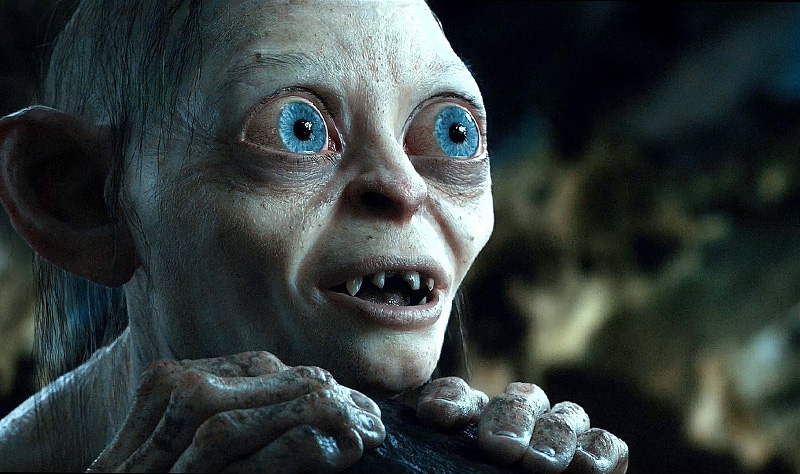

Liste des animaux extraordinaires
Voici mes animaux preferes
- Billywig : un insecte venimeux dont la piqûre fait léviter sa victime
- Botruc : petite créature considérée comme un protecteur des arbres
- Demiguise : singe capable de se rendre invisible grâce à sa fourrure.
- Démonzémerveille : un oiseau géant dont le venin efface les mauvais souvenirs.
- Dirico : un oiseau replet connu par les Moldus sous le nom de dodo et qui peut se téléporter

But Gollum is so Nice !!! See him saying "My precious" on this Video
via GIPHY
Please visit my Main website